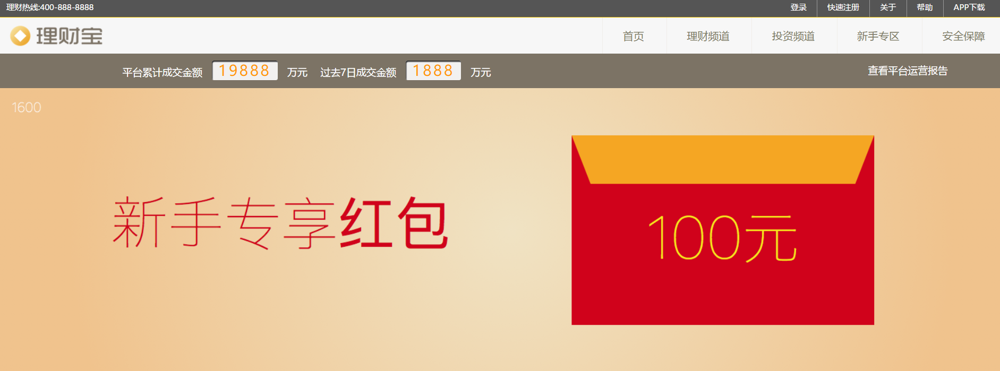
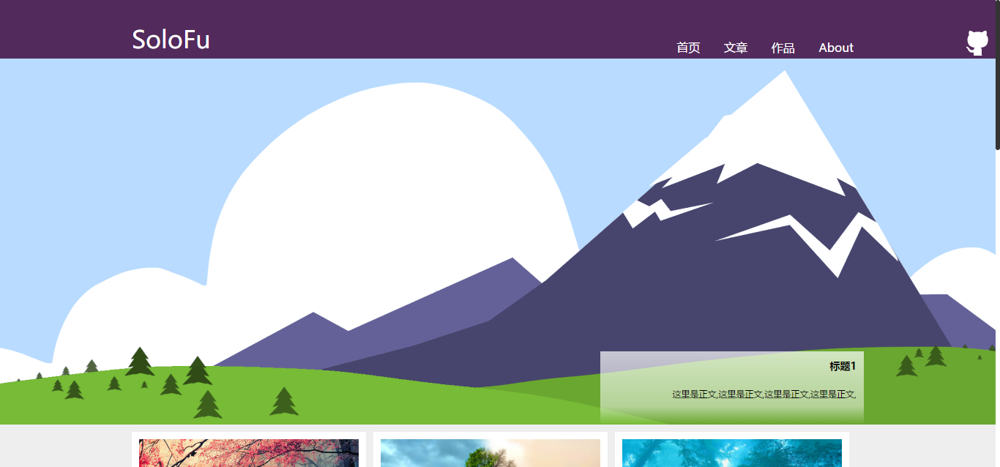
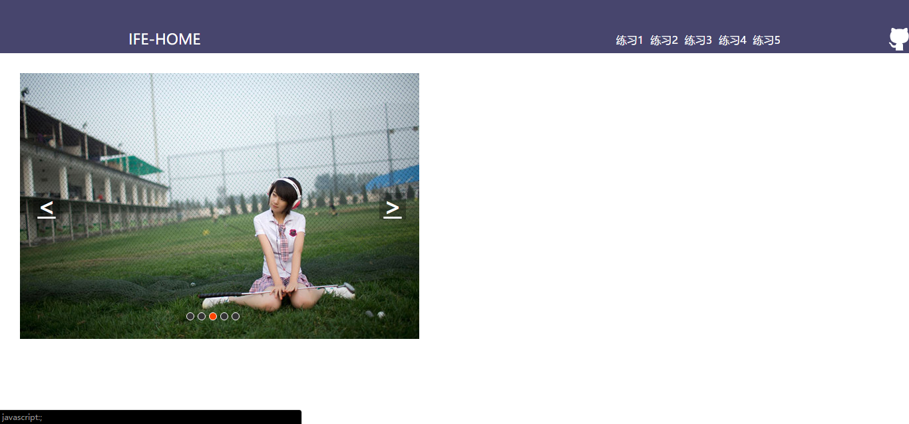

-
- Basic info. 基本信息
- 个人信息: 傅培欣 / 男 / 22岁
- 教育经历: 本科 / 电子科技大学中山学院 / 毕业时间：2016
- 英语水平: CET-6
- 个人博客 & Github: https://silkyer.github.io/
-
- Experience. 项目与工作经验
项目经验
-
基于VUE2.0的高仿饿了么WEB APP
源码地址：https://github.com/silkyer/VUE-APP/tree/master/vuetest
使用vue-cli + webpack创建，并在项目中使用vue-router和vue-resource(有空会改成axios)等热门的VUE第三方插件，该项目数据全部是动态获取后台的json文件,且充分运用模块化思想，例如商品、商家、评论、购物车等模块都是通过单独构建组件再引入到主页面。实现很多功能如添加购物车、收藏等。熟悉Vue1.0至2.0的迁移和部分常用api的改动
个人作品
-
响应式页面 https://silkyer.github.io/demo/Responsivedemo
源码地址：https://github.com/silkyer/demo/tree/master/Responsivedemo
1.一个同时兼容移动端，PC端的页面，兼容性在IE8以下可能显示不正常，请升级浏览器。
2.通过媒体查询media query分别在宽480px以下 400-800px 800px以上显示适应屏幕的内容。
3.通过owl.carousel插件实现响应式轮播图效果，并通过picturefilljs以兼容低版本浏览器对picture标签的兼容。
4.通过这次练手，明白了响应式页面的设计思路，和页面调试以及前端工程化的相关内容。
 -
百度IFE前端技术学院课程
不是培训机构!!!不是培训机构!!!不是培训机构!!!是百度官方举办的一个关于前端的活动QAQ
源码地址：https://github.com/silkyer/ife-work
Task 0001
Demo：https://silkyer.github.io/ife-work/task00001/index.html
实现了一个个人博客网站的首页、文章、作品、关于等静态页面，合理运用HTML语义化标签，并实现了多栏布局、瀑布流布局、时间轴等布局样式
Task 0002
Demo：https://silkyer.github.io/ife-work/task00002/task0002_1.html
实现了一个微型JS库，其中包括对原生 JavaScript 数据类型及语言基础、DOM、事件、BOM、Ajax等的操作和封装，并运用这个JS库实现了表单输入交互、倒计时工具、轮播图、界面拖拽交互
 - Skill. 技能清单
-
HTML / CSS
1.熟悉HTML5，能够编写模块化的 CSS，完成较复杂的布局
2.理解盒子模型、熟悉选择器优先级、清除浮动，position以及移动端开发基本规范等等
3.有一定的布局思路。
-
JavaScript
1.熟悉JavaScript，熟悉ES5，了解ES6语法，理解原型继承，XMLHttpRequest、上下文、闭包、作用域等语言特性。
2.熟悉Vue、vue-router、axios等热门vue第三方库
3.熟悉原生Ajax、axios等http库
-
其他
1.在日常使用中，能够利用Chrome dev tools进行简单的项目调试。
2.利用草料二维码，查看Android和IOS的网页显示效果
3.有与后端合作过的经验,懂的分析并使用接口
4.能够使用Git配合gitlab进行版本控制和协作开发。
5.了解webpack等前端打包类工具。
6.能够科学上网。
-
1、学习能力强，有独立解决问题的能力，对待事情有责任心。
2、体验过刀耕火种的前端,使用过最原始的原生JS API,而后再接触前端框架
3、钢琴十级(十多年前,现在已成渣)..